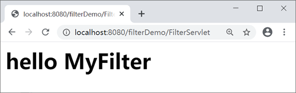

Servlet Filter（过滤器）
Servlet Filter 又称 Servlet 过滤器，它是在 Servlet 2.3 规范中定义的，能够对 Servlet 容器传给 Web 资源的 request 对象和 response 对象进行检查和修改。
Filter 不是 Servlet，不能直接访问，它本身也不能生成 request 对象和 response 对象，它只能为 Web 资源提供以下过滤功能：

加载和实例化完成后，Servlet 容器调用 init() 方法初始化 Filter 实例。在 Filter 的生命周期内， init() 方法只执行一次。
以上元素说明如下：
在 web.xml 中，通过使用 <filter-mapping> 及其子元素映射 Filter，代码如下。
以上元素说明如下：
<dispatcher> 元素的取值及其意义：
@WebFilter 注解具有下表给出的一些常用属性。以下所有属性均为可选属性，但 value、urlPatterns、servletNames 三者必需至少包含一个，且 value 和 urlPatterns 不能共存，如果同时指定，通常忽略 value 的取值。
使用 @WebFilter 注解配置过滤器，代码如下。
2. 在 net.biancheng.www.filter 包中，创建名称为 MyFilter 的 Filter 类，代码如下。
3. 在 net.biancheng.www.servlet 包中创建名称为 FilterServlet 的 Servlet 类，代码如下。
4. 启动 Tomcat 服务器，在地址栏输入“http://localhost:8080/filterDemo/FilterServlet”，访问 FilterServlet，结果如下图。
Filter 不是 Servlet，不能直接访问，它本身也不能生成 request 对象和 response 对象，它只能为 Web 资源提供以下过滤功能：
- 在 Web 资源被访问前，检查 request 对象，修改请求头和请求正文，或对请求进行预处理操作。
- 将请求传递到下一个过滤器或目标资源。
- 在 Web 资源被访问后，检查 response 对象，修改响应头和响应正文。
Filter 是 Servlet 规范中最实用的技术，通过它可以对服务器管理的所有 Web 资源（例如 JSP、Servlet、静态 HTML 文件、静态图片等）进行拦截，从而实现一些特殊的功能，例如用户的权限控制、过滤敏感词、设置统一编码格式等。注意：过滤器并不是必须要将请求传递到下一个过滤器或目标资源，它可以自行对请求进行处理，并发送响应给客户端，也可以将请求转发或重定向到其他的 Web 资源。
Filter 接口
与开发 Servlet 需要实现 javax.servlet.Servlet 接口类似，开发过滤器要实现 javax.servlet.Filter 接口，并提供一个公开的不带参的构造方法。在 Filter 接口中，定义了 3 个方法，如下表所示。| 返回值类型 | 方法 | 功能描述 |
|---|---|---|
| void | init (FilterConfig filterConfig) | 该方法用于初始化过滤器。 |
| void | doFilter(ServletRequest request,SeivletResponse response, FilterChain chain) |
该方法完成实际的过滤操作，当客户端请求的 URL 与过滤器映射的 URL 匹配时，容器会先调用该方法对请求进行拦截。 参数 request 和 response 表示请求和响应对象。 参数 chain 代表当前 Filter 链对象，在该方法内部，调用 chain.doFilter() 方法，才能把请求交付给 Filter 链中的下一个 Filter 或者 Web 资源。 |
| void | destroy() | 该方法在销毁 Filter 对象之前被调用，用于释放被 Filter 对象占用的资源。 |
Filter 的工作流程
Filter的工作流程如下：- 客户端请求访问容器内的 Web 资源。
- Servlet 容器接收请求，并针对本次请求分别创建一个 request 对象和 response 对象。
- 请求到达 Web 资源之前，先调用 Filter 的 doFilter() 方法，检查 request 对象，修改请求头和请求正文，或对请求进行预处理操作。
- 在 Filter 的 doFilter() 方法内，调用 FilterChain.doFilter() 方法，将请求传递给下一个过滤器或目标资源。
- 目标资源生成响应信息返回客户端之前，处理控制权会再次回到 Filter 的 doFilter() 方法，执行 FilterChain.doFilter() 后的语句，检查 response 对象，修改响应头和响应正文。
- 响应信息返回客户端。
Filter 的生命周期
Filter 的生命周期分为 3 个阶段：- 初始化阶段
- 拦截和过滤阶段
- 销毁阶段
1. 初始化阶段
Servlet 容器负责加载和实例化 Filter。容器启动时，读取 web.xml 或 @WebFilter 的配置信息对所有的过滤器进行加载和实例化。加载和实例化完成后，Servlet 容器调用 init() 方法初始化 Filter 实例。在 Filter 的生命周期内， init() 方法只执行一次。
2. 拦截和过滤阶段
该阶段是 Filter 生命周期中最重要的阶段。当客户端请求访问 Web 资源时，Servlet 容器会根据 web.xml 或 @WebFilter 的过滤规则进行检查。当客户端请求的 URL 与过滤器映射匹配时，容器将该请求的 request 对象、response 对象以及 FilterChain 对象以参数的形式传递给 Filter 的 doFilter() 方法，并调用该方法对请求/响应进行拦截和过滤。3. 销毁阶段
Filter 对象创建后会驻留在内存中，直到容器关闭或应用被移除时销毁。销毁 Filter 对象之前，容器会先调用 destory() 方法，释放过滤器占用的资源。在 Filter 的生命周期内，destory() 只执行一次。注册与映射 Filter
注册和映射 Filter 有 2 种方式：- 通过 web.xml 配置
- 通过 @WebFilter 注解配置
1. 通过web.xml配置
在 web.xml 中，通过 <filter> 及其子元素注册 Filter，代码如下。
<filter>
<filter-name>myFilter</filter-name>
<filter-class>net.biancheng.www.MyFilter</filter-class>
<init-param>
<param-name>name</param-name>
<param-value>编程帮</param-value>
</init-param>
<init-param>
<param-name>URL</param-name>
<param-value>www.biancheng.net</param-value>
</init-param>
</filter>
以上元素说明如下：
- <filter> 用于注册过滤器
- <filter-name> 是<filter> 元素的子元素， 用于指定过滤器的注册名，该元素的内容不能为空。
- <filter-class> 是<filter> 元素的子元素，用于指定过滤器的完整限定名（包名+类名）。
- <init-param> 是<filter> 元素的子元素，用于为过滤器指定初始化参数，它的子元素 <param-name> 指定参数的名称，<param-value> 指定参数的值。
在 web.xml 中，通过使用 <filter-mapping> 及其子元素映射 Filter，代码如下。
<filter-mapping>
<filter-name>myFilter</filter-name>
<url-pattern>/login</url-pattern>
<dispatcher>REQUEST</dispatcher>
<dispatcher>FORWARD</dispatcher>
</filter-mapping>
<filter-mapping>
<filter-name>myFilter</filter-name>
<servlet-name>ServletDemo</servlet-name>
</filter-mapping>
以上元素说明如下：
- <filter-mapping> 元素用于设置 Filter 负责拦截的资源。
- <filter-name> 是<filter-mapping> 元素的子元素，用于设置 Filter 的注册名，该值必须在 <filter>元素的子元素 <filter-name> 中声明过。
- <url-pattern> 是<filter-mapping> 元素的子元素，用于设置 Filter 拦截的请求路径。
- <servlet-name> 是<filter-mapping> 元素的子元素，用于设置 Filter 拦截的 Servlet 名称。
- <dispatcher> 是<filter-mapping> 元素的子元素，用于指定 Filter 拦截的资源被 Servlet 容器调用的方式，可以是 REQUEST、INCLUDE、FORWARD 和 ERROR 之一，默认 REQUEST。用户可以设置多个 <dispatcher> 子元素指定 Filter 对资源的多种调用方式进行拦截。
<dispatcher> 元素的取值及其意义：
- REQUEST：当用户直接访问页面时，容器将会调用过滤器。如果目标资源是通过 RequestDispatcher 的 include() 或 forward() 方法访问，则该过滤器就不会被调用。
- INCLUDE：如果目标资源通过 RequestDispatcher 的 include() 方法访问，则该过滤器将被调用。除此之外，该过滤器不会被调用。
- FORWARD：如果目标资源通过 RequestDispatcher 的 forward() 方法访问，则该过滤器将被调用，除此之外，该过滤器不会被调用。
- ERROR：如果目标资源通过声明式异常处理机制访问，则该过滤器将被调用。除此之外，过滤器不会被调用。
2. 使用 @WebFilter 注解进行配置
@WebFilter 注解也可以对过滤器进行配置，容器在部署应用时，会根据其具体属性配置将相应的类部署为过滤器。@WebFilter 注解具有下表给出的一些常用属性。以下所有属性均为可选属性，但 value、urlPatterns、servletNames 三者必需至少包含一个，且 value 和 urlPatterns 不能共存，如果同时指定，通常忽略 value 的取值。
| 属性名 | 类型 | 描述 |
|---|---|---|
| filterName | String | 指定过滤器的 name 属性，等价于 <filter-name>。 |
| urlPatterns | String[] | 指定过滤器的 URL 匹配模式。等价于 <url-pattern> 标签。 |
| value | String[] | 该属性等价于 urlPatterns 属性，但是两者不能同时使用。 |
| servletNames | String[] | 指定过滤器将应用于哪些 Servlet。取值是 @WebServlet 中 filterName 属性的取值，或者 web.xml 中 <servlet-name> 的取值。 |
| dispatcherTypes | DispatcherType | 指定过滤器拦截的资源被 Servlet 容器调用的方式。具体取值包括： ASYNC、ERROR、FORWARD、INCLUDE、REQUEST。 |
| initParams | WebInitParam[] | 指定一组过滤器初始化参数，等价于 <init-param> 标签。 |
| asyncSupported | boolean | 声明过滤器是否支持异步操作模式，等价于 <async-supported> 标签。 |
| description | String | 指定过滤器的描述信息，等价于 <description> 标签。 |
| displayName | String | 指定过滤器的显示名，等价于 <display-name> 标签。 |
使用 @WebFilter 注解配置过滤器，代码如下。
package net.biancheng.www.filter;
import java.io.IOException;
import java.util.logging.LogRecord;
import javax.servlet.DispatcherType;
import javax.servlet.Filter;
import javax.servlet.FilterChain;
import javax.servlet.ServletException;
import javax.servlet.ServletRequest;
import javax.servlet.ServletResponse;
import javax.servlet.annotation.WebFilter;
import javax.servlet.annotation.WebInitParam;
@WebFilter(
dispatcherTypes = {
DispatcherType.REQUEST,
DispatcherType.FORWARD,
DispatcherType.INCLUDE,
DispatcherType.ERROR
},
asyncSupported = true,
description = "过滤器4",
urlPatterns = {"/login"},
initParams = {
@WebInitParam(name = "name", value = "编程帮", description = "name的描述")
},
servletNames = {"SuccessServlet"})
public class MyFilter implements Filter {
@Override
public void doFilter(ServletRequest request, ServletResponse response, FilterChain chain)
throws IOException, ServletException {
}
}
示例
1. 创建一个名称为 filterDemo 的项目，并创建两个包，包名分别为 net.biancheng.www.servlet 和 net.biancheng.www.filter。2. 在 net.biancheng.www.filter 包中，创建名称为 MyFilter 的 Filter 类，代码如下。
package net.biancheng.www.filter;
import java.io.IOException;
import javax.servlet.DispatcherType;
import javax.servlet.Filter;
import javax.servlet.FilterChain;
import javax.servlet.FilterConfig;
import javax.servlet.ServletException;
import javax.servlet.ServletRequest;
import javax.servlet.ServletResponse;
import javax.servlet.annotation.WebFilter;
/**
* 第一个 Filter 过滤器
*
* @author 编程帮 www.biancheng.net
*/
@WebFilter(dispatcherTypes = {
DispatcherType.REQUEST,
DispatcherType.FORWARD,
DispatcherType.INCLUDE,
DispatcherType.ERROR
}
, urlPatterns = {"/FilterServlet"})
public class MyFilter implements Filter {
public void destroy() {
}
public void doFilter(ServletRequest request, ServletResponse response, FilterChain chain) throws IOException, ServletException {
//设置向页面输出的格式与编码
response.setContentType("text/html;charset=UTF-8");
//通过Filter向页面输出内容
response.getWriter().write("<h1>hello MyFilter</h1>");
}
public void init(FilterConfig fConfig) throws ServletException {
}
}
3. 在 net.biancheng.www.servlet 包中创建名称为 FilterServlet 的 Servlet 类，代码如下。
package net.biancheng.www.servlet;
import java.io.IOException;
import javax.servlet.ServletException;
import javax.servlet.annotation.WebServlet;
import javax.servlet.http.HttpServlet;
import javax.servlet.http.HttpServletRequest;
import javax.servlet.http.HttpServletResponse;
/**
* Filter 过滤器拦截的 Servlet
* @author 编程帮 www.biancheng.net
*/
@WebServlet("/FilterServlet")
public class FilterServlet extends HttpServlet {
private static final long serialVersionUID = 1L;
public FilterServlet() {
super();
}
protected void doGet(HttpServletRequest request, HttpServletResponse response) throws ServletException, IOException {
//设置向页面输出的格式与编码
response.setContentType("text/html;charset=UTF-8");
response.getWriter().write("<h3>FilterServlet访问成功</h3>");
}
protected void doPost(HttpServletRequest request, HttpServletResponse response) throws ServletException, IOException {
doGet(request, response);
}
}
4. 启动 Tomcat 服务器，在地址栏输入“http://localhost:8080/filterDemo/FilterServlet”，访问 FilterServlet，结果如下图。

关注公众号「站长严长生」，在手机上阅读所有教程，随时随地都能学习。内含一款搜索神器，免费下载全网书籍和视频。

微信扫码关注公众号